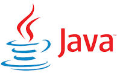

Python

History :
Guido Van Rossum developed Python in the middle of the eighties and nineties.
He developed it at the National Research Institute for Mathematics and Computer Science in the Netherlands.
It is derived from many languages like C, C++, Algol-68, ABC, Unix shell, etc. Moreover, it is copyrighted.
Features :
The features are as follows:
- Easy to code and maintain
-
Many people call it developer-friendly because it is quite easy to learn.
Furthermore, we can learn to write its code very easily in a few hours or days. Moreover,
this is possible because it has only a few keywords, a simple structure, and a clearly defined syntax.
Open source and free
It is an open-source language which means that anyone can download it,
use it, and share it. Moreover, it is free of cost.
Object-oriented
It supports object-oriented programming language features.
For example, the concept of object and classes, encapsulation, inheritance, etc.
Supports GUI programming
Python has support for creating various GUI applications. Furthermore, these applications
can work in many system software and libraries.
Besides, it has modules like PyQt5, PyQt4, wxPython, or Tk through which we can make graphical user interfaces.
Among them, PyQt5 is the most popular for making graphical apps.
- Extensible in nature
-
It is extensible in nature which means that we can use python code in other languages. For example C, C++ also
can compile that code in C or C++.
- Portable and Platform independent
-
It is portable in nature. Moreover, we can run the python code in any environment like windows, Linux, mac, etc
without changing it. Besides, if we write the code in one OS and run it on the other it is totally valid.
- Integrated Language
-
We can easily integrate it with other languages such as C, C++, etc. Hence, it is an integrated language.
- Interpreted Language
-
It uses an interpreter for converting the source code into machine code. This means that we execute the python
code line by line. Hence, it becomes easy to debug the error and solve it.
- Huge Standard Library
-
There are a very large number of libraries in python. These libraries contain predefined modules and
functions for certain tasks. Hence, it becomes easy fr the programmer to develop the code since he does
not have to do all the things by himself. Moreover, the library is portable and cross-platform compatible.
- Dynamically Typed
-
This means that we do not have to define the type of the variable.
The interpreter decides it itself at the run time. Hence, the name dynamically typed.
